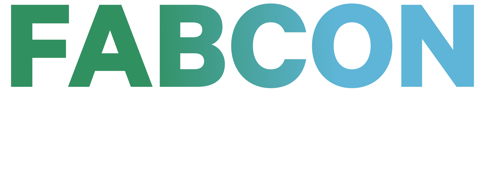

April 5–9, 2027 | ICC Sydney
Sign up and be first in line when tickets drop
Unveiling the Future of Microsoft Fabric at FABCON
What is FABCON?
FABCON is a community-built conference for people who are serious about Microsoft Fabric. It started as a gathering of practitioners who wanted more than vendor demos and marketing slides — a place where data engineers, analysts, and BI developers could share what's actually working (and what isn't) in the real world. That spirit is still at the heart of every event.
FABCON Asia is proudly sponsored by Microsoft, bringing keynote speakers and sessions directly from the teams building Fabric. Alongside that, you'll hear from practitioners doing this work every day — hands-on workshops, honest conversations about where Fabric is heading, and sessions that go beyond the surface. Whether you're just getting started with Fabric or you've been building on it since day one, there's something here for you.

Why attend FABCON?
Gain insight from the people shaping the future of Microsoft Fabric and walk away with practical ideas you can immediately apply in your own work.

Inspiring keynotes
Hear directly from Microsoft leaders, product experts, and industry voices as they share their vision for what’s next in Microsoft Fabric.

Hands-on workshops
Move beyond theory with practical workshops designed to help you build real skills and deepen your understanding of Fabric.

Expert-led sessions
Dive into topics such as data engineering, analytics, business intelligence, governance, and AI integration through sessions led by experienced practitioners.

Meaningful networking
Connect with fellow data professionals, architects, developers, and decision-makers who are navigating similar challenges and opportunities.

Product insights
Develop a clear view of where Microsoft Fabric is heading and how upcoming capabilities can influence your data strategy.

Real-world stories
Discover how organizations are solving real challenges with Fabric through customer cases, lessons learned, and proven best practices.